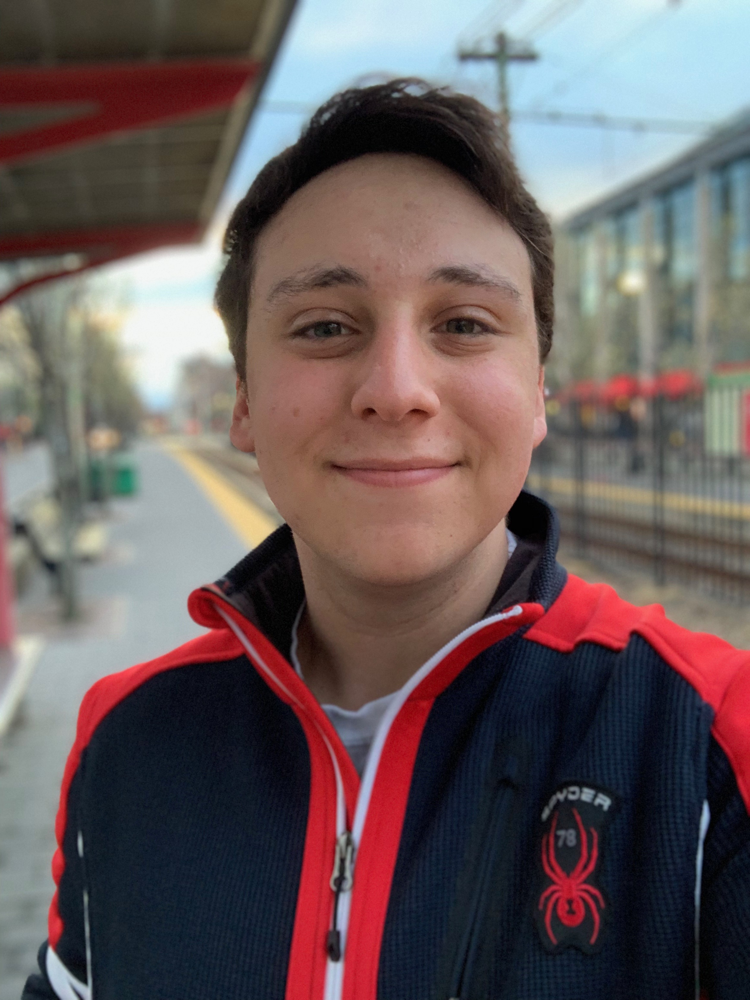

About me;
Hello! My name is Kyle Posluns, and I'm from the Chicagoland area. I'm currently a candidate for a Bachelor of Science in Computer Science at Northeastern University in Boston, MA.
I work on the Tech Team for HackBeanpot and I'm a volunteer research assistant at the Mon(IOT)r Research Group. I am passionate about technology and how it can improve the lives of people.